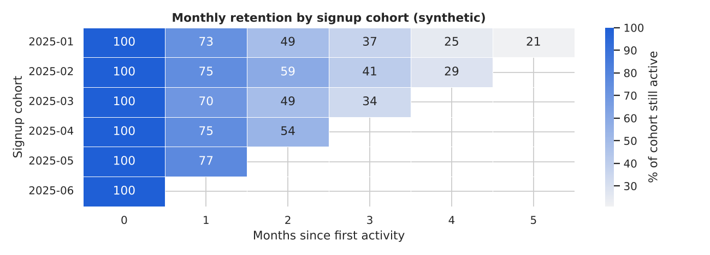

How a business makes money and which numbers show it, how Excel habits map onto Python, how lenders measure risk, and how data travels from SQL through Python into a Power BI dashboard. All data is synthetic and all rates are illustrative.
In this part
Explain revenue, cost, margin, contribution margin and break-even, and calculate them
Calculate growth, churn, retention, CAC, payback and cash runway
Every business sells something for a price and pays costs to do it. Revenue is price times quantity sold. Variable costs rise with each sale (parts, airtime, delivery). Fixed costs do not (rent, licences, salaries). Profit is revenue minus all costs.
Contribution margin (CM) is price minus variable cost per unit: what one sale contributes toward the fixed costs. The CM ratio is CM divided by price. Break-even is the sales level where profit is exactly zero: fixed costs divided by the CM ratio. Our example is a synthetic TV repair shop in Nairobi, with made-up prices.
importnumpyasnpimportpandasaspdjobs=pd.DataFrame({"service":["Screen repair","Board repair","HDMI port fix","Wall mounting"],"price_ksh":[9500,4500,2500,1500],"variable_ksh":[7000,2700,1300,650],# parts plus labour per job"jobs_per_month":[14,30,22,40],})jobs["cm_per_job"]=jobs["price_ksh"]-jobs["variable_ksh"]jobs["cm_ratio_pct"]=(100*jobs["cm_per_job"]/jobs["price_ksh"]).round(1)jobs["total_cm"]=jobs["cm_per_job"]*jobs["jobs_per_month"]print(jobs[["service","cm_per_job","cm_ratio_pct","total_cm"]].to_string(index=False))
fixed_costs=95000# rent, power, one assistant (illustrative)revenue=(jobs["price_ksh"]*jobs["jobs_per_month"]).sum()total_cm=jobs["total_cm"].sum()cm_ratio=total_cm/revenuebe_revenue=fixed_costs/cm_ratioprint(f"Revenue Ksh {revenue:,.0f} | CM Ksh {total_cm:,.0f} | blended CM ratio {cm_ratio:.1%}")print(f"Profit: Ksh {total_cm-fixed_costs:,.0f} | break-even revenue: Ksh {be_revenue:,.0f}")print(f"Margin of safety: {(revenue-be_revenue)/revenue:.1%}")print("profit at break-even is zero:",bool(abs(cm_ratio*be_revenue-fixed_costs)<1e-6))
Revenue Ksh 383,000 | CM Ksh 149,400 | blended CM ratio 39.0%
Profit: Ksh 54,400 | break-even revenue: Ksh 243,541
Margin of safety: 36.4%
profit at break-even is zero: True
Plug the answer back into the formula: profit at break-even must be zero. The result assumes the mix of jobs stays the same.
Common mistake. A high price does not mean a high margin. Compare services by CM ratio, not by price: here the cheapest service earns a better ratio than the most expensive one.
Growth rate is (this period - last period) / last period. Churn is the share of customers lost in a period, and retention is 1 minus churn. A cohort is a group who started in the same month; a retention matrix shows whether newer groups stay longer than older ones, which one overall average would hide.
Revenue in thousands of Ksh, synthetic. The compound rate is smoother than any single month.
Now a synthetic activity log of 600 customers, each active for a random number of months. We count how many of each cohort are still active n months later.
rng=np.random.default_rng(96)n_cust=600start=rng.integers(0,6,n_cust)# first month 0..5 (Jan to Jun 2025)rows=[]forcid,sinenumerate(start,1):stay=rng.geometric(0.28)# months the customer stays activeforkinrange(min(stay,6-s)):rows.append((cid,pd.Timestamp("2025-01-01")+pd.DateOffset(months=int(s+k))))act=pd.DataFrame(rows,columns=["customer_id","active_month"])first=act.groupby("customer_id")["active_month"].transform("min")act["cohort"]=first.dt.strftime("%Y-%m")act["age"]=((act["active_month"].dt.year-first.dt.year)*12+act["active_month"].dt.month-first.dt.month)counts=act.pivot_table(index="cohort",columns="age",values="customer_id",aggfunc="nunique")retention=counts.div(counts[0],axis=0).mul(100).round(0)retention
age
0
1
2
3
4
5
cohort
2025-01
100.0
73.0
49.0
37.0
25.0
21.0
2025-02
100.0
75.0
59.0
41.0
29.0
NaN
2025-03
100.0
70.0
49.0
34.0
NaN
NaN
2025-04
100.0
75.0
54.0
NaN
NaN
NaN
2025-05
100.0
77.0
NaN
NaN
NaN
NaN
2025-06
100.0
NaN
NaN
NaN
NaN
NaN
Read row by row: column 0 is always 100 percent (the joining month), column 1 is the share still active a month later. The empty bottom-right triangle is not zero: later cohorts simply have not had time yet, so never fill it with zero.
importmatplotlib.pyplotaspltimportseabornassnsBLUE,GREEN,GREY,DARK,AMBER="#1F5FD6","#2BB38A","#9CA3AF","#0B2A4A","#B45309"sns.set_theme(style="whitegrid")fig,ax=plt.subplots(figsize=(10,3.6))sns.heatmap(retention,annot=True,fmt=".0f",cmap=sns.light_palette(BLUE,as_cmap=True),cbar_kws={"label":"% of cohort still active"},ax=ax,linewidths=0.5)ax.set_title("Monthly retention by signup cohort (synthetic)")ax.set_xlabel("Months since first activity");ax.set_ylabel("Signup cohort")plt.tight_layout();plt.savefig("p17_retention.png",dpi=130);plt.close()print("saved p17_retention.png")
saved p17_retention.png

Colours fade fastest between month 0 and month 1: most churn happens early, which is where onboarding effort pays off.
Pooled month-1 retention: 74.1% | implied monthly churn: 25.9%
#17.3 Acquisition Cost, Payback and Lifetime Value
Customer acquisition cost (CAC) is marketing spend divided by new customers won. Payback period is CAC divided by the monthly gross margin per customer: how many months until a customer has paid back what it cost to win them. A simple lifetime value (LTV) is monthly margin divided by monthly churn. The LTV to CAC ratio is a quick health check (many teams like 3 or more; that is a rule of thumb, not a law).
ch=pd.DataFrame({"channel":["WhatsApp ads","Radio","Referral","Roadside poster"],"spend_ksh":[60000,90000,48000,15000],"new_customers":[150,120,80,25],"monthly_margin_ksh":[350,300,350,250],"monthly_churn":[0.08,0.06,0.06,0.10],})ch["CAC"]=ch["spend_ksh"]/ch["new_customers"]ch["payback_months"]=ch["CAC"]/ch["monthly_margin_ksh"]ch["LTV"]=ch["monthly_margin_ksh"]/ch["monthly_churn"]ch["LTV_to_CAC"]=ch["LTV"]/ch["CAC"]print(ch[["channel","CAC","payback_months","LTV","LTV_to_CAC"]].round(1).to_string(index=False))blended=ch["spend_ksh"].sum()/ch["new_customers"].sum()print(f"Blended CAC: Ksh {blended:,.0f} | best LTV:CAC: {ch.loc[ch['LTV_to_CAC'].idxmax(),'channel']}")
Common mistake. Reporting only the blended CAC hides that one channel may cost several times another. Compare by channel, and use gross margin, not revenue, for payback.
Practice
A channel costs Ksh 40,000 and wins 50 customers with Ksh 500 monthly margin. What is the payback in months?
cac=40000/50print(cac,"->",cac/500,"months")
800.0 -> 1.6 months
Solution. CAC is Ksh 800; divided by Ksh 500 of monthly margin gives 1.6 months.
Profit is not cash: a customer who has not paid yet is revenue but not cash. Operating cash flow comes from the business, investing is equipment, and financing is loans and repayments. Net cash flow is the sum of the three and the closing balance is the opening balance plus the running total. Runway is cash divided by monthly burn.
months=pd.period_range("2025-01","2025-12",freq="M")rng=np.random.default_rng(97)cf=pd.DataFrame({"operating":rng.normal(60000,25000,12).round(-2),"investing":np.where(months.month==4,-320000,0),# buy equipment in April"financing":np.where(months.month==4,100000,-12000),# SACCO loan, then repayments},index=months.astype(str))opening=50000cf["net"]=cf.sum(axis=1)cf["closing"]=opening+cf["net"].cumsum()print(cf.to_string())print("lowest balance:",f"{cf['closing'].min():,.0f}","in",cf["closing"].idxmin())print("months below zero:",cf.index[cf["closing"]<0].tolist())
Most Kenyan finance, retail and fintech teams still live in Excel. If you know the pandas twin of each Excel habit, you can do the work in either tool and automate it later. The table is the map; the cells prove the main rows on a small synthetic sales table.
Rule.validate="many_to_one" makes pandas stop if the lookup table has duplicate keys. Excel quietly returns the first match; a duplicate key in pandas would inflate your totals.
Always check that the pivot's grand total equals the column sum: if not, rows were lost.
A finished report is more than numbers: a title, header colours, number formats and a total that is a live formula. xlsxwriter writes new workbooks; openpyxl reads or edits them.
Common mistake.pd.read_excel returns the last cached value of a formula and never recalculates. A file written by xlsxwriter has no cached value unless you pass one, as we did above.
Lenders measure risk with a few numbers. PD (probability of default) is the chance a borrower defaults within a stated period. EAD (exposure at default) is the amount owed when that happens. LGD (loss given default) is the share of EAD not recovered. Expected loss is EL = PD x LGD x EAD. These are teaching definitions on synthetic data; regulated lenders follow detailed supervisory rules (such as IFRS 9).
loans PD EAD LGD EL_ksh
band
A (low risk) 1185 0.023 68937200.0 0.662 1039359.0
B 1403 0.051 82120600.0 0.577 2433168.0
C 1022 0.141 58636100.0 0.563 4654492.0
D (high risk) 390 0.256 24006300.0 0.557 3430125.0
Portfolio EL: Ksh 11,557,144 = 4.95% of EAD
Synthetic loan book. PD is a default rate per band; LGD is weighted by exposure, not a simple average.
Careful. PD from a sample is only valid if every loan was watched for the same length of time. Young loans have not had time to default, which makes PD look too low.
The NPL ratio is non-performing loans divided by gross loans; a loan is commonly non-performing at 90 or more days past due (your regulator's definition decides). PAR30 counts balances more than 30 days past due. The synthetic lender database has no balance column, so principal stands in for the balance.
importsqlite3fromfintech_dbimportbuild_fintech_dbcon=sqlite3.connect(build_fintech_db("p17_lender.db"))loans=pd.read_sql("SELECT * FROM loans",con)live=loans[loans["status"]!="Closed"]# not Closed = the live bookgross=live["principal_ksh"].sum()npl=live.loc[live["days_past_due"]>=90,"principal_ksh"].sum()par30=live.loc[live["days_past_due"]>30,"principal_ksh"].sum()print(f"Gross Ksh {gross:,.0f} | NPL ratio {npl/gross:.1%} | PAR30 {par30/gross:.1%}")print("PAR30 is at least the NPL ratio:",bool(par30>=npl))
Gross Ksh 66,882,700 | NPL ratio 46.6% | PAR30 50.3%
PAR30 is at least the NPL ratio: True
The ratios are high because this synthetic book keeps defaulted loans at full principal with no write-offs. A real lender would report far less.
A scorecard ranks borrowers by risk. AUC is the chance that a randomly chosen defaulter scores worse than a randomly chosen non-defaulter: 0.5 is a coin flip, 1.0 is perfect. KS is the largest gap between the cumulative share of defaulters and non-defaulters as you move down the score. Both measure separation, not calibration. We build a small synthetic scorecard, then compute both and check against scikit-learn and SciPy.
A good scorecard shows a lower default rate in each higher band.
AUC
Rough reading (illustrative rule of thumb)
0.50
no better than chance
0.60 to 0.70
weak
0.70 to 0.80
acceptable
0.80 to 0.90
strong
above 0.90
check for leakage
Using it in the real world. Measure AUC and KS on held-out data, and never use a feature only known after default (leakage). In practice monitor them monthly: a falling AUC means the score is ageing.
Power BI is Microsoft's dashboard tool. Power Query is its data-preparation engine (Get Data, then Transform Data). Every click becomes a step in the M language and the steps replay at each refresh, just like a pandas pipeline. Use it for light, repeatable shaping; use SQL or Python for heavy logic.
The same steps in pandas give the numbers your Power Query result must match.
Performance. When Power Query can turn your steps into one SQL statement it sends the work to the database (query folding). Put filters and column selection first, and check View Native Query.
Power BI works best with a star schema: a central fact table of events (transactions) with numbers to add up, surrounded by small dimension tables that describe them (customer, channel, date). A dimension's unique key relates one-to-many to the fact table, and filters flow from the dimension to the fact. Build one from the lender database and run three tests: unique dimension keys, no orphan keys, same totals as the source.
txn=pd.read_sql("SELECT * FROM transactions",con)cust=pd.read_sql("SELECT * FROM customers",con)dim_customer=cust[["customer_id","county","occupation","segment"]].copy()dim_channel=pd.DataFrame({"channel":sorted(txn["channel"].unique())})dim_channel["channel_key"]=range(1,len(dim_channel)+1)fact_txn=(txn.merge(dim_channel,on="channel",validate="many_to_one").assign(date_key=lambdat:t["txn_date"].str.replace("-","").astype(int))[["txn_id","customer_id","date_key","channel_key","status","amount_ksh"]])dates=pd.date_range("2024-01-01","2025-12-31",freq="D")dim_date=pd.DataFrame({"date":dates,"date_key":dates.strftime("%Y%m%d").astype(int),"year":dates.year,"month":dates.month,"year_month":dates.strftime("%Y-%m")})tests={"dim keys unique":dim_customer["customer_id"].is_uniqueanddim_date["date_key"].is_unique,"date table has no gaps":bool((dim_date["date"].diff().dropna()==pd.Timedelta(days=1)).all()),"no orphan customers":fact_txn["customer_id"].isin(dim_customer["customer_id"]).all(),"no orphan dates":fact_txn["date_key"].isin(dim_date["date_key"]).all(),"fact total = source total":bool(np.isclose(fact_txn["amount_ksh"].sum(),txn["amount_ksh"].sum())),}print(pd.Series(tests).astype(bool).to_string())assertall(tests.values())
dim keys unique True
date table has no gaps True
no orphan customers True
no orphan dates True
fact total = source total True
Run these tests every time the model is rebuilt. An orphan key shows up in Power BI as a blank row in every visual.
Rule. Keep relationships one-to-many with a single filter direction. Avoid many-to-many and two-way filters until you can explain why you need them. Mark the date table as the date table, and keep it free of gaps, or time-intelligence functions return blanks.
DAX (Data Analysis Expressions) is the formula language of Power BI. A measure is not stored in a column; it is recalculated for the filter context of every visual cell (the row, column, slicer and page filters active there). In pandas you get the same number by filtering first, then aggregating. The DAX below is for reading; each line has a pandas proof so you know what number it must return.
Not executed in this notebook (needs a service or setting you must provide yourself).
DAX measures, for reading: they run inside Power BI Desktop.
DAX idea
What it does
pandas twin
SUM, COUNTROWS
aggregate in the current filter context
groupby().sum(), size()
CALCULATE
re-evaluate with a changed filter
mask, then aggregate
ALL(column)
remove a filter
aggregate the whole table (the denominator)
DIVIDE(a, b, alt)
safe division
divide, then replace inf or NaN
SAMEPERIODLASTYEAR
same dates one year earlier
shift(12) on a complete monthly series
f=(fact_txn.merge(dim_customer[["customer_id","county"]],on="customer_id").merge(dim_channel,on="channel_key").merge(dim_date[["date_key","year_month"]],on="date_key"))total=f["amount_ksh"].sum()# Total Valuesuccess=(f["status"]=="Success").sum()/len(f)# Success Ratempesa=f.loc[f["channel"]=="M-Pesa","amount_ksh"].sum()# M-Pesa Valueshare=(f.groupby("county")["amount_ksh"].sum()/total).sort_values(ascending=False)print(f"Total Value Ksh {total:,.0f} | Success Rate {success:.2%} | M-Pesa Value Ksh {mpesa:,.0f}")print("top county share:",share.index[0],f"{share.iloc[0]:.1%}","| shares sum to 1:",bool(np.isclose(share.sum(),1)))mv=f.groupby("year_month")["amount_ksh"].sum().to_frame("value")mv["value_ly"]=mv["value"].shift(12)# SAMEPERIODLASTYEARmv["yoy_pct"]=((mv["value"]/mv["value_ly"]-1)*100).round(1)print(mv.iloc[[0,12,13,23]].round(0).to_string())
Total Value Ksh 68,391,943 | Success Rate 95.65% | M-Pesa Value Ksh 37,561,536
top county share: Nairobi 35.0% | shares sum to 1: True
value value_ly yoy_pct
year_month
2024-01 2602383.0 NaN NaN
2025-01 2525240.0 2602383.0 -3.0
2025-02 2531682.0 2445017.0 4.0
2025-12 3725656.0 3480646.0 7.0
The first 12 months have no year-ago value, so YoY is blank (NaN), as in Power BI.
Common mistake. Build ratios from measures (a sum divided by a count), never by averaging a column of pre-computed ratios: the average of ratios is not the ratio of totals.
The common pattern is: database, then Python for cleaning, validation and metrics, then a tidy dataset, then Power BI for visuals. The skill is knowing which tool owns which step, so every rule is written once and every report agrees.
Never type a password into a notebook or commit it to Git. Prefer Windows Authentication (no password), or read secrets from environment variables, for example from a .env file listed in .gitignore. Use a read-only account. A SQL Server connection needs packages not installed here, so it is shown, not run.
# .env (never commit; add ".env" to .gitignore)# SQL_SERVER=MYSERVER\SQLEXPRESS# SQL_DATABASE=Sales# SQL_USER=report_reader# SQL_PASSWORD=change_meimportos,urllib.parseimportpandasaspdfromdotenvimportload_dotenvfromsqlalchemyimportcreate_engineload_dotenv()# copies .env values into os.environodbc=("DRIVER={ODBC Driver 18 for SQL Server};"f"SERVER={os.environ['SQL_SERVER']};DATABASE={os.environ['SQL_DATABASE']};"f"UID={os.environ['SQL_USER']};PWD={os.environ['SQL_PASSWORD']};TrustServerCertificate=yes")engine=create_engine("mssql+pyodbc:///?odbc_connect="+urllib.parse.quote_plus(odbc))df=pd.read_sql("SELECT order_id, order_date, region, units, revenue FROM dbo.fact_sales",engine)
Not executed in this notebook (needs a service or setting you must provide yourself).
SQLite stands in for SQL Server so every cell runs anywhere. The five steps are extract with SQL, clean in pandas, validate, reconcile against an independent SQL total, and publish tidy files for Power BI. Small functions make a pipeline you can schedule later (Part 18).
importjsonEXTRACT_SQL='''SELECT t.txn_id, t.customer_id, t.txn_date, t.channel, t.status, t.amount_ksh, c.county, c.segmentFROM transactions t JOIN customers c ON c.customer_id = t.customer_id'''defclean(raw):df=raw.copy()forcolin["channel","status","county","segment"]:df[col]=df[col].str.strip()df["txn_date"]=pd.to_datetime(df["txn_date"],format="%Y-%m-%d",errors="coerce")df["amount_ksh"]=pd.to_numeric(df["amount_ksh"],errors="coerce")df["year_month"]=df["txn_date"].dt.strftime("%Y-%m")df["is_success"]=(df["status"]=="Success").astype(int)returndfdefvalidate(df):return{"duplicate txn_id":int(df["txn_id"].duplicated().sum()),"bad date":int(df["txn_date"].isna().sum()),"bad amount":int((df["amount_ksh"].isna()|(df["amount_ksh"]<=0)).sum()),"unknown status":int((~df["status"].isin(["Success","Failed","Reversed"])).sum()),}raw=pd.read_sql(EXTRACT_SQL,con)df=clean(raw)broken=pd.concat([raw,raw.iloc[[0]],raw.iloc[[1]].assign(amount_ksh=-50)],ignore_index=True)print(pd.DataFrame({"real data":validate(df),"broken on purpose":validate(clean(broken))}))
real data broken on purpose
duplicate txn_id 0 2
bad date 0 0
bad amount 0 1
unknown status 0 0
Test your validator on data you broke on purpose; a check that never fails proves nothing.
defreconcile(df,con):sql=pd.read_sql("SELECT strftime('%Y-%m', txn_date) AS year_month, COUNT(*) AS n, ""ROUND(SUM(amount_ksh), 2) AS total FROM transactions GROUP BY 1",con)py=df.groupby("year_month").agg(n=("txn_id","size"),total=("amount_ksh","sum")).round(2).reset_index()m=sql.merge(py,on="year_month",suffixes=("_sql","_py"),validate="one_to_one")returnbool((m["n_sql"]==m["n_py"]).all()andnp.allclose(m["total_sql"],m["total_py"]))defpublish(df,out_dir):os.makedirs(out_dir,exist_ok=True)kpi=(df.groupby("year_month").agg(txns=("txn_id","size"),value_ksh=("amount_ksh","sum"),success_rate=("is_success","mean"),active_customers=("customer_id","nunique")).round({"value_ksh":2,"success_rate":4}).reset_index())df.assign(txn_date=df["txn_date"].dt.strftime("%Y-%m-%d")).to_csv(f"{out_dir}/fact_transactions.csv",index=False)kpi.to_csv(f"{out_dir}/kpi_monthly.csv",index=False)returnkpiissues=validate(df)ok=reconcile(df,con)assertokandsum(issues.values())==0,"stop: do not publish unvalidated data"kpi=publish(df,"p17_powerbi")log={"rows":len(df),"months":len(kpi),"reconciled":ok,"issues":sum(issues.values())}json.dump(log,open("p17_powerbi/run_log.json","w"))print(log,sorted(os.listdir("p17_powerbi")))
fact=pd.read_csv("p17_powerbi/fact_transactions.csv",parse_dates=["txn_date"])k=pd.read_csv("p17_powerbi/kpi_monthly.csv")print("rows preserved:",len(fact)==len(raw),"| total preserved:",bool(np.isclose(fact["amount_ksh"].sum(),raw["amount_ksh"].sum())))print("KPI table sums to fact:",bool(np.isclose(k["value_ksh"].sum(),fact["amount_ksh"].sum())))k.head(3)
rows preserved: True | total preserved: True
KPI table sums to fact: True
year_month
txns
value_ksh
success_rate
active_customers
0
2024-01
728
2602383.16
0.9588
454
1
2024-02
711
2445017.25
0.9536
451
2
2024-03
833
2706225.95
0.9496
491
Read the files back the way Power BI will, and prove nothing was lost on the way out.
Get Data, Text/CSV, choose fact_transactions.csv, then Transform Data to confirm types.
Relate dim_date to the fact date (one-to-many, single direction) and mark it as the date table.
Write the measures (17.8) first, then visuals. Compare the cards with kpi_monthly.csv before sharing.
To refresh: re-run the Python script, then refresh the dataset (a data gateway handles on-premises sources).
Practice
Why does the pipeline assert before publishing instead of just printing the result?
try:assertsum(validate(clean(broken)).values())==0,"stop: do not publish unvalidated data"exceptAssertionErrorase:print("pipeline stopped:",e)
pipeline stopped: stop: do not publish unvalidated data
Solution. A printed warning scrolls past unseen in a scheduled run; an exception stops the pipeline so bad data never reaches the dashboard.
A dashboard is judged in ten seconds. Before you share one, tick every line.
Area
Check
Purpose
One audience and one decision it supports; the title says what it measures
Top row
3 to 5 KPI cards with definition, period and comparison (last month or target)
Layout
Most important at top left; one idea per visual; no more than about 6 visuals
Chart choice
Line for trend, bar for comparison, table for exact values; no pie with many slices
Colour
One accent colour for the thing to notice; grey for the rest; readable without colour
Labels
Units (Ksh, %), axis titles and a readable number format (Ksh 1.2M)
Filters
A few slicers (date, county, product); default to a sensible period
Trust
Reconciled to an independent SQL total; refresh date and data source shown
Access
Read-only data account; row-level security if people should see only their region
Before you share. Reconcile three numbers (a row count, one total, one ratio) against an independent SQL query, write each KPI definition on the page, and show the refresh date. These habits prevent most arguments about whose number is right.
Key takeaways
Margin, not price, tells you which sales help: contribution margin pays the fixed costs, and break-even is fixed costs divided by the CM ratio.
Compare churn, CAC and payback by channel or cohort; blended averages hide the story.
Profit is not cash: track the closing balance and runway.
Every Excel formula has a pandas twin; check the pivot's grand total against the raw column sum.
Expected loss = PD x LGD x EAD; NPL and PAR30 describe the book, and AUC and KS describe a scorecard on held-out data.
Power BI wants a star schema, a gap-free date table and measures; prove each measure in pandas and reconcile before sharing.